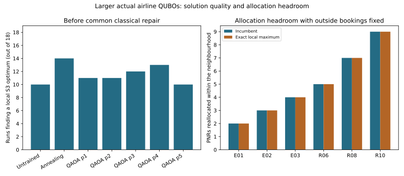

QUBO & QAOA
Airline recovery under shared capacity constraints
Measure allocation, audit feasibility and compare local QAOA sampling with classical annealing.
Mean allocation: 72.19% of bookings; 61.29% of passengers.
Motivation
Recover disrupted bookings while respecting shared seat inventory and an explicit service-cost objective. A quantum extension is evaluated against the same local QUBOs, rather than credited with the classical pipeline’s allocation rate.
Implementation
A whole-booking capacity-slack QUBO, classical simulated annealing, route expansion and audited local improvement act on 7,653 PNRs (booking groups) and 11,822 passengers. QAOA compares structurally selected neighborhoods, one-choice mixers, exact local references and globally checked patch admission.
Results
The expanded classical hybrid reallocates 72.19% of PNRs and 61.29% of passengers, averaged across five seeds. In the larger local study, depth-4 QAOA samples the exact S3 optimum in 13 of 18 runs, versus annealing’s 14. QAOA adds zero bookings or passengers; exact enumeration confirms local allocation saturation.
Limitations
Local QAOA results are not full-population reallocation rates. Independent patches cannot be summed. Each exact local Pareto frontier has one nondominated point. No quantum advantage is established; the airline’s Gurobi comparison remains external.
